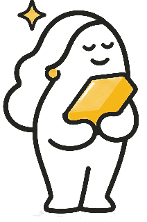

Conoce el valor
Cuéntanos sobre las piezas que tienes y empieza a explorar tus opciones, sin compromiso.
✦ UNA NUEVA FORMA DE DESCUBRIR TU ORO
Tus joyas guardan historias. También tienen valor. Descubre lo que podrían valer, conoce tus opciones y decide con calma.
Sin compromiso, sin presión.
Tú decides qué hacer con tu oro.
Sin compromisoConsulta con libertad
Todo claroTe explicamos cada paso
Tú decidesSiempre a tu ritmo

Tu oro puede darte✦ TU ORO TIENE VALOR
Ese anillo que ya no usas. Una cadena olvidada. Unos pendientes que guardaste hace años.
En Aurea te ayudamos a conocer el valor de tus piezas y a entender tus opciones con transparencia, sin prisas y sin obligación de vender.
Quiero conocer mis opciones✦ EMPECEMOS POR LO IMPORTANTE
No necesitas saberlo todo sobre tus joyas. Cuéntanos un poquito y te mostraremos el siguiente paso.
Esta es una demostración del recorrido. No genera cotizaciones ni transmite datos a ningún establecimiento.
✦ ASÍ DE SENCILLO
Un proceso claro para que sepas qué esperar en cada momento.
Cuéntanos sobre las piezas que tienes y empieza a explorar tus opciones, sin compromiso.
Solicita una visita para conocer la valoración en persona, según disponibilidad.
Un establecimiento aliado verifica el peso, la pureza y las características de tus piezas.
Conoce la oferta y decide si quieres vender. La decisión siempre es tuya.
✦ SIN LETRA PEQUEÑA
Queremos que te sientas seguro en cada paso. Aquí resolvemos algunas dudas habituales.
No. Puedes conocer la valoración y decidir libremente si aceptas o no una oferta.
No necesitas saberlo. Un establecimiento aliado puede comprobar el peso y la pureza durante la visita presencial.
No. Cualquier indicación inicial sería orientativa. La valoración y oferta definitivas requieren revisar físicamente cada pieza.
Influyen el peso, la pureza del oro, su cotización y las condiciones de compra del establecimiento. Te explicaremos qué se está midiendo y qué se está estimando.
No es un servicio disponible en esta fase. El recorrido inicial de Aurea se centra en conocer el valor y en la venta voluntaria de oro.